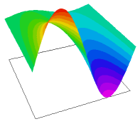

|
spacetime1 |

  
|
|
spacetime1 |
|
{ SPACETIME1.PDE
This example illustrates the use of FlexPDE to solve an initial value problem
of 1-D transient heatflow as a 2D boundary-value problem.
Here the spatial coordinate is represented by X, the time coordinate by Y,
and the temperature by u(x,y).
With these symbols, the transient heatflow equation is:
dy(u) = D*dxx(u),
where D is the diffusivity, given by
D = K/s*rho,
K is the conductivity,
s is the specific heat,
and rho is the density.
The problem domain is taken to be the unit square.
We specify the initial value of u(x,0) along y=0, as well as the time history
along the sides x=0 and x=1.
The value of u is thus assigned everywhere on the boundary except
along the segment y=1, 0<x<1. Along that boundary, we use the
natural boundary condition,
natural(u) = 0,
since this corresponds to the application of no boundary sources on this
boundary segment and hence implies a free segment. This builds in the
assumption that y = 1 (and hence t = 1) is sufficiently large for steady
state to have been reached. [Note that since the only y-derivative term is
first order, the default procedure of FlexPDE does not integrate this term
by parts, and the Natural(u) BC does not correspond to a surface flux,
functioning only as a source or sink.]
This problem can be solved analytically, so we can plot the deviation
of the FlexPDE solution from the exact answer.
}
title "1-D Transient Heatflow as a Boundary-Value problem"
select
alias(x) "distance"
alias(y) "time"
variables
u
definitions
diffusivity = 0.06 { pick a diffusivity that gives a nice graph }
frequency = 2 { frequency of initial sinusoid }
fpi = frequency*pi
ut0 = sin(fpi*x) { define initial distribution of temperature }
u0 = exp(-fpi^2 *diffusivity*y)*ut0 { define exact solution }
Initial values
u = ut0 { initialize all time to t=0 value }
equations
U: dy(u) = diffusivity*dxx(u) { define the heatflow equation }
boundaries Region 1 start(0,0) value(u)=ut0 { set the t=0 temperature } line to (1,0)
value(u) = 0 { always cold at x=1 } line to (1,1)
natural(u) = 0 { no sources at t=1 } line to (0,1)
value(u) = 0 { always cold at x=0 } line to close
monitors contour(u)
plots contour(u) surface(u) contour(u-u0) as "error"
end |
 |
Page url: index.html?usage_spacetime1.html